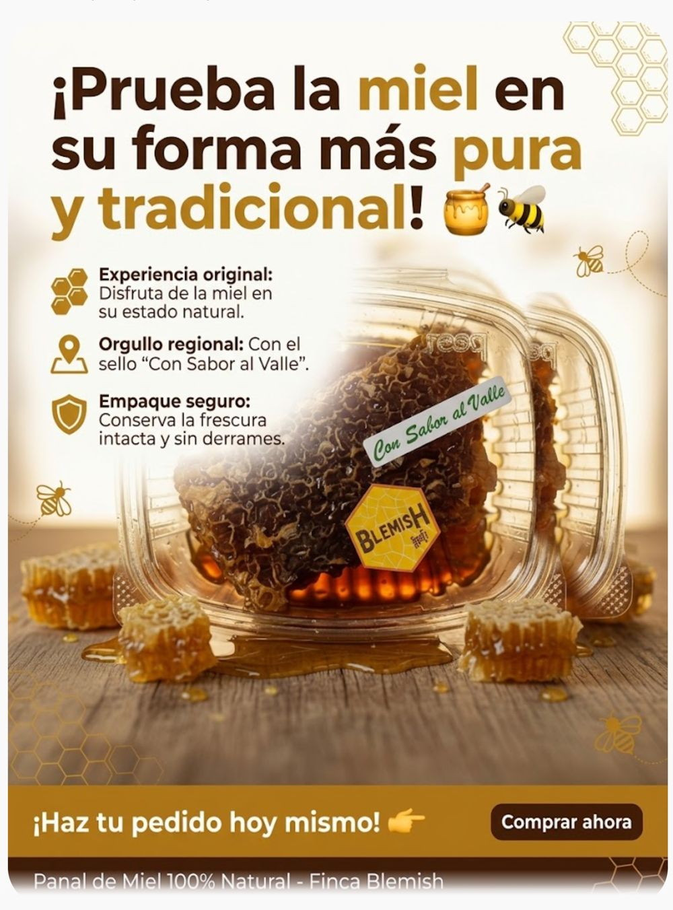

← Volver al catálogo · Mieles

Panal de miel
Recipiente transparente tipo estuche, sello «Con Sabor al Valle» y etiqueta Blemish · contenido neto 220 g
$20.000 IVA incluido
Miel tal como la hacen las abejas: sellada de forma natural en sus celdas de cera, con su color dorado. Es miel cruda, sin procesar, de nuestras colmenas en Jamundí, Valle del Cauca. Viene en un recipiente transparente tipo estuche que protege el panal y evita derrames. Una forma auténtica y diferente de disfrutar la miel, del campo directo a tu mesa.
Características
- Origen: Finca Blemish, Quinamayo / Playa Amarilla, Jamundí, Valle del Cauca (Colombia)
- Panal con miel sellada de forma natural en sus celdas de cera
- Miel cruda, sin procesar
- Color dorado
- Contenido neto: 220 g
- Envase: recipiente transparente tipo estuche que protege el panal y evita derrames
- Sello «Con Sabor al Valle» y etiqueta Blemish
Beneficios
- La experiencia de comer miel directamente del panal
- Sabor auténtico de la miel en su forma más natural
- Estuche práctico que cuida el panal y evita derrames
- Del campo directo a tu mesa: apoyas lo local
Modo de uso y conservación
- Cómelo directo: corta un trocito con una cuchara y mastícalo. La cera se puede masticar o desechar después de disfrutar la miel.
- Sírvelo sobre tostadas o pancakes, o con yogur y frutas.
- Acompaña una tabla de quesos, galletas o carnes frías.
- Guárdalo cerrado, en un lugar fresco y seco. No requiere refrigeración.